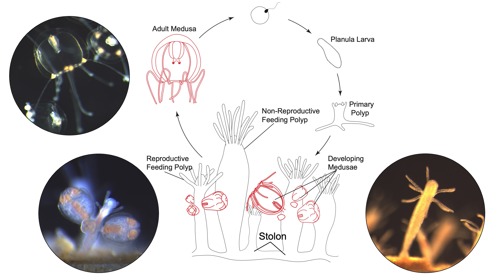

Evolutionary biology · Comparative genomics · Marine conservation
Michael T. Connelly, Ph.D.
I use genomics and computational biology to understand how animal diversity evolves—from the origins of cell types in early animals to hidden biodiversity and microbial partnerships in coral reefs.
Postdoctoral Researcher · National Human Genome Research Institute, National Institutes of Health
Research overview
Connecting evolutionary questions with genomic evidence
My research combines comparative genomics, phylogenomics, and single-cell transcriptomics to investigate how genomes, cells, and symbioses shape animal diversity. I work primarily with cnidarians—jellyfish and corals—which offer powerful perspectives on the evolution of animal tissues, regeneration, immunity, and marine biodiversity.

Cell-type evolution
How did animal cells and tissues evolve?
At NHGRI, I study the hydrozoan Podocoryna using genome resources and single-cell RNA sequencing to investigate cell-type diversity, differentiation, and the evolution of specialized tissues such as striated muscle.
Explore this research →
Biodiversity & conservation
What diversity is hidden in coral reefs?
I apply phylogenomics and museum genomics to resolve species boundaries in Pocillopora corals, connecting evolutionary history to coral distributions and conservation.
Explore this research →
Host–microbe interactions
How do symbioses shape animal biology?
My work investigates how coral-associated bacteria and symbiotic algae relate to host physiology, immune responses, and evolutionary diversification.
Explore this research →Selected contributions
Co-first author · G3: Genes, Genomes, Genetics
Read the paper →First author · Genome Biology and Evolution
Read the paper →First author · Coral Reefs
Read the paper →First author · Molecular Ecology
Read the paper →Methods and research toolkit
I value collaborative, reproducible research that connects robust computational analyses with biological questions and conservation needs. My work has taken me from molecular laboratories and museum collections to coral reefs in the eastern tropical Pacific.
Explore my work
Browse research projects, read the publication record, or get in touch about research and collaboration.